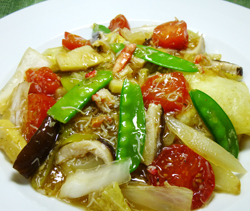

カニあんかけ餅
- 調理時間：30 分
- （一人当たり）
- カロリー：325kcal
- たんぱく質：10.8g
- 脂質：6.3g
- 塩分：2.1g


＜２人分＞
- 角餅
- 3個
- 玉ねぎ
- 50g
- シイタケ
- 30g
- マイタケ
- 30g
- ゆでタケノコ
- 50g
- 白菜
- 100g
- 絹サヤ
- 20g
- ミニトマト
- 4個
- カニのほぐし身
- 50g
- 油（炒め用）
- 少々
- ・水
- 1カップ
- ・砂糖
- 大さじ1
- ・しょうゆ
- 大さじ1
- ・塩
- 小さじ1/4
- ・コショウ
- 少々
- ・酢
- 大さじ1
- 水溶き片栗粉
- 適量
Ａ


- 角餅は３～４等分に切り、オーブントースターで焼く。
- 玉ねぎはクシ切り、シイタケは細切り、マイタケは手でほぐす。白菜は３㎝幅にザク切り、ミニトマトは輪切り、絹サヤは筋をとる。ゆでタケノコは短冊切りにする。
- Ａの調味料を合わせておく。
- 熱したフライパンに油をしき、玉ねぎ、シイタケ、マイタケ、ゆでタケノコを入れて炒める。
火が通ってきたら、白菜、絹サヤ、ミニトマトを加えてさらに炒める。 - カニのほぐし身を加えてさっと混ぜ合わせてからＡの調味液を加えて、サッと煮立てる。
水溶き片栗粉でとろみをつける。 - ①の餅をお皿に盛り、あんをかけて出来上がり。
カニあんかけ餅
今回のレシピは、お正月に残ったお餅で嬉しい一品。
焼いたお餅は、表面カリッと、中はトローリ。主食にはもちろん、おやつにも重宝します。ご存知のように栄養素は炭水化物中心なので、具だくさんにして一皿でも栄養満点に仕上げましょう。
たっぷり使った白菜は、ほとんどが水分ですが、カリウムとビタミンCが豊富に含まれています。しかし、カリウムやビタミンCは水溶性なのでスープやあんかけにして汁ごと食べると栄養素が丸ごと摂取できてムダがありません。また、カニに含まれるビタミンB1と組み合わせることで、疲労回復にも効果が期待できます。